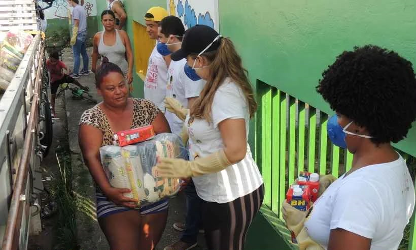
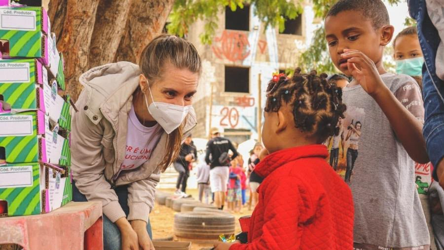
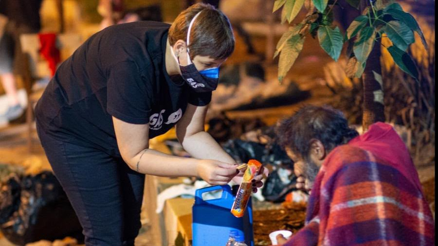

ONG Esperança
Onde a solidariedade se trasnforma em esperança

Isabela Carvalho
Criando um mundo com Esperança!
Quem somos
Somos uma ONG dedicada a ajudar pessoas e transformar vidas por meio de projetos sociais.



Projetos
Ao longo de nossa trajetória, a ONG Esperança desenvolveu projetos voltados para transformar vidas e fortalecer a comunidade. Cada iniciativa nasceu da vontade de ajudar, acolher e criar novas oportunidades para pessoas que precisam de apoio. Realizamos campanhas para arrecadar alimentos e montar cestas básicas destinadas a famílias em situação de vulnerabilidade, contribuindo para garantir uma alimentação mais digna.
📚 Projeto Educação e Futuro
Promovemos ações de apoio educacional para crianças e jovens, com atividades de reforço escolar, incentivo à leitura e orientação para os estudos.
👕 Campanha do Agasalho
Durante os períodos de frio, arrecadamos roupas, cobertores e agasalhos para serem distribuídos a famílias e pessoas em situação de vulnerabilidade.
🤝 Ação Comunitária
Organizamos eventos comunitários com serviços, orientações, atividades recreativas e momentos de integração, aproximando voluntários e moradores da comunidade.
🎁 Natal da Esperança
Realizamos campanhas de Natal para arrecadar brinquedos, alimentos e presentes, proporcionando momentos de carinho e alegria para crianças e famílias atendidas pela organização. Cada projeto representa uma oportunidade de fazer a diferença. Juntos, podemos transformar solidariedade em esperança e esperança em novas oportunidades.
Entre em contato
E-mail: contato@ongesperanca.org
Telefone: (11) 99999-9999